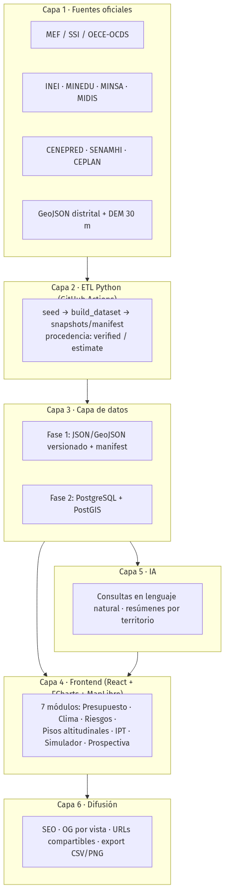
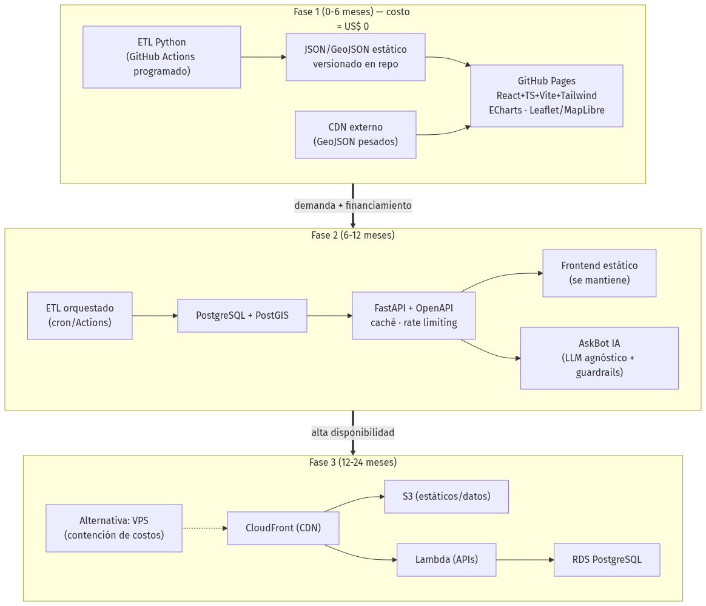
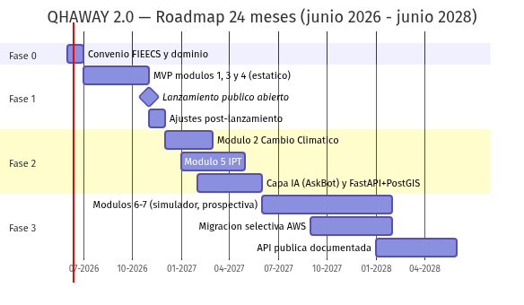

Propuesta institucional y técnica de relanzamiento – Facultad de Ingeniería Económica, Estadística y Ciencias Sociales, Universidad Nacional de Ingeniería
Junio 2026
En abril de 2024 la FIEECS-UNI lanzó QHAWAY, Observatorio del Presupuesto Público del Perú, una apuesta pionera por poner datos fiscales al servicio de la docencia, la investigación y la incidencia pública1. El dashboard llegó a operar con cuatro tableros (ejecución presupuestal MEF, inversión verde, transporte e indicadores del Estado), con desagregación hasta nivel provincial2. Hoy ese dashboard está fuera de línea: el dominio y el hosting pagados caducaron, el acceso exigía registro previo y no existían URLs compartibles ni posicionamiento en buscadores. La lección no es de concepto –la idea era correcta– sino de sostenibilidad técnica y de costos.
Esta propuesta plantea relanzar la marca como QHAWAY 2.0 – Observatorio Nacional de Inteligencia Territorial, Presupuesto Público, Cambio Climático, Riesgos y Desarrollo Humano, sobre una base ya demostrada: el proponente técnico, Carlos Cárdenas Fernández, egresado UNI, mantiene en producción siete observatorios de datos públicos de acceso abierto –más un octavo en repositorio pre-publicación–, a nivel distrital y con costo de infraestructura de US$ 0, entre ellos Perú Transparente, Proyecto INTI (1,891 distritos georreferenciados) y Perú Riesgos3. QHAWAY 2.0 no parte de cero: reutiliza componentes operativos y los pone bajo el respaldo institucional de la FIEECS-UNI.
El observatorio se organiza en siete módulos:
| # | Módulo | Qué responde |
|---|---|---|
| 1 | Presupuesto Público | PIA/PIM/Devengado/Girado por distrito, sector y programa |
| 2 | Cambio Climático | Cuánto y dónde invierte el Perú en adaptación y mitigación |
| 3 | Riesgos Territoriales | Inundaciones, sequías, heladas, huaicos, estrés hídrico |
| 4 | Pisos Altitudinales | Composición de cada distrito según las 8 regiones naturales |
| 5 | Índice de Prosperidad Territorial (IPT) | Educación, salud, economía y servicios por territorio |
| 6 | Simulador de Políticas | Escenarios con elasticidades de literatura OCDE/BM, supuestos explícitos |
| 7 | Observatorio Prospectivo | Escenarios territoriales 2030/2040/2050 con apoyo de IA |
El diferencial único es el módulo de pisos altitudinales: cruzando los límites distritales con un modelo digital de elevación (SRTM/Copernicus 30 m), cada distrito se descompone porcentualmente en las ocho regiones naturales de Javier Pulgar Vidal (Chala, Yunga, Quechua, Suni, Puna, Janca, Selva Alta, Selva Baja)4. Esto permite responder preguntas que hoy ninguna plataforma pública responde: ¿cuánto presupuesto recibe la puna?, ¿cuánta inversión climática llega a los territorios amazónicos o a los distritos más vulnerables a heladas?
La implementación se escalona en tres fases: la Fase 1 (0-6 meses) entrega el observatorio completo como sitio estático en GitHub Pages con ETL en Python, con costo de infraestructura ~ US$ 0 –el mismo patrón ya probado en los observatorios live del equipo–; la Fase 2 (6-12 meses) añade backend FastAPI, PostgreSQL/PostGIS y una API pública documentada; la Fase 3 (12-24 meses) escala a nube AWS con CDN e infraestructura como código, con alternativa de contención de costos documentada. La plataforma integrará 14+ fuentes oficiales, entre ellas MEF Consulta Amigable, INEI, MINEDU-ESCALE, MINSA, CENEPRED-SIGRID, SENAMHI, CEPLAN y la API OCDS del OECE5.
El pedido concreto a la FIEECS-UNI es de respaldo, no de presupuesto de infraestructura: (i) respaldo institucional del Decanato para que QHAWAY 2.0 sea el observatorio oficial de la Facultad; (ii) dominio y presencia web institucional (subdominio bajo fieecs.uni.edu.pe o equivalente, evitando la dependencia de dominios pagados que ya costó la caída del original); y (iii) equipo académico: docentes e investigadores que validen metodologías, y estudiantes de Ingeniería Económica y Estadística que participen vía cursos, tesis y prácticas. La Fase 1 es demostrable en seis meses sin inversión en servidores.
Tres cifras resumen la ambición: 1,891 distritos con información territorial, 8 pisos altitudinales como lente de análisis inédito del presupuesto, y 14+ fuentes oficiales integradas en una sola plataforma abierta.
En abril de 2024, la FIEECS-UNI anunció QHAWAY, el “Observatorio del Presupuesto Público del Perú”, concebido como herramienta de docencia, investigación e incidencia pública6. Fue una apuesta institucional valiosa y, en varios sentidos, pionera dentro de la universidad pública peruana: pocas facultades del país han intentado convertir los datos del MEF en un producto digital propio, con identidad de marca y vocación ciudadana.
La evidencia archivada del dashboard –snapshot de Wayback Machine del 30 de noviembre de 20247– permite documentar con precisión lo que QHAWAY logró construir:
Este diagnóstico parte, por tanto, del reconocimiento: QHAWAY validó la hipótesis de que existe demanda académica y ciudadana por un observatorio presupuestal con sello FIEECS-UNI. Lo que falló no fue la idea, sino decisiones técnicas y de sostenibilidad específicas e identificables.
El dominio dashboard.qhaway-fieecs.pe se encuentra hoy
caído; solo sobrevive el snapshot archivado. Las causas son concretas y,
lo más importante, todas tienen solución probada:
.pe y un hosting
pagados; cuando caducaron, el proyecto desapareció íntegro. Un
observatorio universitario no puede depender de renovaciones
presupuestales menores para existir.Ninguna de estas causas es estructural. La lección central –que la sostenibilidad técnica y de costos es tan importante como el contenido– es precisamente el punto de partida de QHAWAY 2.0.
El equipo proponente no ofrece promesas: ofrece productos en línea, verificables hoy por cualquier lector con un navegador. La comparación es directa:
| Criterio | QHAWAY 2024 | Ecosistema actual del equipo |
|---|---|---|
| Estado | Offline (solo archivo Wayback) | 7 observatorios live + 1 en repositorio |
| Acceso | Login obligatorio | Acceso abierto, sin registro |
| Alcance territorial | Departamento / provincia | Distrital (1,891 distritos con GeoJSON) |
| URLs compartibles / SEO | No | Sí (estado en URL, OG por vista) |
| Costo de hosting | Dominio + hosting pagados (caducaron) | US$ 0 (sitios estáticos en GitHub Pages) |
| Actualización de datos | Manual | ETL Python versionado y automatizable |
Los activos que sustentan la columna derecha, todos del proponente técnico (Carlos Cárdenas Fernández, egresado UNI):
| Activo | Qué demuestra para QHAWAY 2.0 |
|---|---|
| Perú Transparente8 | 213 mil servidores públicos; ECharts, MapLibre, Cytoscape; SEO/OG dinámico; export CSV; ETL Python (MEF, gob.pe, OECE) |
| Obs. de Poder Económico9 | Grafos offline (PageRank, Louvain) e índice compuesto EPI 0-100: metodología heredable para índices territoriales |
| Perú Riesgos10 | 14 secciones de riesgos (sismos, El Niño, huaicos, heladas) con 6 simuladores client-side y simulaciones compartibles por URL |
| Proyecto INTI11 | GeoJSON de 1,891 distritos + UBIGEO; IDH y pobreza distrital; prospectiva 2075 con escenarios |
| Obs. FONAFE12 | ETL modular versionado con snapshots y patrón anti-overclaiming (datos marcados verified/estimate); AskBot con IA |
| Obs. Defensa-Interior13 | Patrón de presupuesto sectorial + asistente IA client-side sin backend (costo operativo cero) |
| Obs. Smartphones Adolescentes14 | i18n en 10 idiomas con prerender; procedencia de datos por registro; biblioteca con DOI |
| Perú Finanzas Públicas (repo local, pre-publicación) | Series 1990-2025 de PBI/gasto/deuda; PIA/PIM/Devengado; ETL sobre Consulta Amigable del MEF y BCRP |
Precisión anti-overclaiming: los siete primeros activos están publicados y operativos a la fecha de este documento; el octavo existe como repositorio funcional aún no publicado. Se citan como evidencia de capacidad ya ejecutada, no como promesa de capacidad futura.
El Estado peruano publica sus datos presupuestales: la Consulta Amigable del MEF15 permite, en teoría, descender hasta el detalle del gasto. En la práctica, su uso exige conocer la jerarquía PIA/PIM/Devengado, navegar menús anidados y entender clasificadores funcionales-programáticos. El resultado es que hoy un ciudadano de a pie –un padre de familia en Churcampa, una regidora en Condorcanqui, un estudiante en El Agustino– no puede responder la pregunta más básica de la rendición de cuentas: “¿cuánto invierte el Estado en mi distrito y en qué?” sin entrenamiento previo en la herramienta del MEF.
Esa brecha entre dato disponible y dato comprensible es exactamente el espacio que el QHAWAY original intuyó en 2024 y que QHAWAY 2.0, con la base técnica ya demostrada, está en condiciones de cerrar a nivel distrital, en acceso abierto y a costo de infraestructura cercano a cero en su primera fase.
El relanzamiento de QHAWAY no es una apuesta especulativa: es la convergencia, en 2026, de seis condiciones que en 2024 –cuando nació el observatorio original– estaban apenas maduras o no existían. La ventana está abierta hoy; cada una de estas condiciones es verificable.
(a) Los datos abiertos del Estado peruano alcanzaron masa crítica. El MEF expone la ejecución presupuestal completa –PIA, PIM, Devengado, Girado– a nivel distrital y mensual vía Consulta Amigable16; el OECE publica todas las contrataciones públicas en estándar internacional OCDS mediante API17; CENEPRED mantiene en SIGRID escenarios y registros de riesgo georreferenciados18; y el Portal Nacional de Datos Abiertos agrega miles de datasets de entidades19. El insumo ya no es el cuello de botella: lo es la capacidad de integrarlo, limpiarlo y narrarlo. Esa es precisamente la competencia que la FIEECS forma.
(b) El costo marginal de publicar cayó a prácticamente cero. El QHAWAY original murió, en buena parte, por costos recurrentes de dominio y hosting. La arquitectura de sitio estático sobre GitHub Pages –con ETL en Python versionado y JSON estático– elimina ese riesgo: el equipo proponente opera hoy siete observatorios live bajo este patrón con costo de infraestructura de US$ 0, entre ellos Perú Transparente20 y Perú Riesgos21 (detalle en §2.3). No es una hipótesis: es un patrón en producción.
(c) La IA generativa elimina la barrera del especialista. Hasta hace poco, preguntar “¿cuánto ejecutó mi distrito en agua y saneamiento?” exigía dominar el navegador del MEF. Los LLM permiten consultas en lenguaje natural sobre el dataset, con el patrón AskBot ya probado en los observatorios FONAFE y Defensa-Interior del equipo. La condición anti-overclaiming se mantiene: la IA interpreta datos publicados y citables, no inventa cifras.
(d) Existe demanda académica concreta en la FIEECS. Tesis de ingeniería económica y estadística, papers sobre eficiencia del gasto, cursos de econometría espacial y un eventual laboratorio de datos necesitan exactamente esto: series limpias, georreferenciadas y reproducibles. QHAWAY 2.0 convierte a la facultad en proveedora de datos de investigación, no solo consumidora.
(e) La agenda climática y de riesgos carece de tablero territorial público. El Perú reporta NDC al Acuerdo de París22 y está adherido al Marco de Sendai para la Reducción del Riesgo de Desastres23, pero no existe una plataforma pública que cruce inversión climática, exposición a peligros y territorio a nivel distrital. El tablero “Inversión Verde” del QHAWAY original intuyó esta necesidad; QHAWAY 2.0 la resuelve con el etiquetado climático del gasto y los pisos altitudinales.
(f) 2026 es año electoral y de escrutinio presupuestal. Un nuevo ciclo político eleva la demanda ciudadana y periodística de evidencia sobre qué se prometió, qué se presupuestó y qué se ejecutó. Un observatorio universitario, técnicamente neutral, es el emisor más creíble de esa evidencia.
| Referente | Modelo | Lección para QHAWAY 2.0 |
|---|---|---|
| Our World in Data24 | Académico (Oxford), open access, gráficos compartibles con URL | Una universidad puede ser referencia global de datos públicos |
| World Bank Data25 | Datos abiertos + API + visualización simple | Acceso sin registro multiplica el uso |
| OECD Data Explorer26 | Explorador unificado de indicadores comparables | La integración multi-fuente es el valor, no el dato aislado |
Ninguno de estos referentes exige login ni cobra por consultar –exactamente lo contrario del QHAWAY original. La oportunidad para la FIEECS-UNI es ocupar, a escala territorial peruana, el espacio que Our World in Data ocupa a escala global: hoy ese espacio está vacío.
QHAWAY toma su nombre del verbo quechua qhaway –“mirar, observar”– y esa raíz no es decorativa: define el mandato. La visión al 2030 es que QHAWAY 2.0 sea el observatorio territorial de referencia del Perú: el lugar donde un investigador, un funcionario, un periodista o un vecino de Chumbivilcas miran –con el mismo dato y la misma fuente– cuánto presupuesto llega a su territorio, qué riesgos lo amenazan y cómo evoluciona su prosperidad. Operado académicamente por la FIEECS-UNI, QHAWAY 2.0 recupera y amplía el mandato del observatorio anunciado en abril de 202427, esta vez sobre una base técnica ya demostrada en producción y con un modelo de sostenibilidad que evita repetir la caída del dashboard original.
Misión: producir y publicar, de forma continua y verificable, inteligencia territorial sobre presupuesto público, cambio climático, riesgos y desarrollo humano a nivel distrital (1,891 distritos), al servicio de la docencia, la investigación y la incidencia pública de la FIEECS-UNI y del país.
La visión se sostiene en cinco principios operativos, que son a la vez compromisos verificables:
verified cuando proviene de fuente oficial,
estimate cuando es cálculo propio); los supuestos del
simulador y las proyecciones prospectivas se declaran explícitamente.
Este patrón ya opera en los observatorios del equipo proponente.El horizonte 2030 es ambicioso pero acotado: no se promete predecir el futuro ni reemplazar a los entes rectores de estadística; se promete observar mejor –con cobertura distrital, lente territorial y método público– lo que el Estado ya publica de forma fragmentada.
QHAWAY 2.0 no compite con la Consulta Amigable del MEF29 ni con los portales del INEI: los integra y traduce a territorio. Su valor está en cruzar lo que hoy vive en silos –presupuesto, clima, riesgo, desarrollo humano– sobre una misma unidad de análisis: el distrito y su composición altitudinal.
| Audiencia | Dolor actual | Qué le entrega QHAWAY 2.0 |
|---|---|---|
| Academia (FIEECS-UNI y red nacional) | Cada tesis repite meses de limpieza de datos MEF/INEI | Datasets distritales limpios, versionados y citables, listos para investigación; insumo directo para cursos de economía pública y estadística |
| Estado (GORE, municipios, MEF, CEPLAN) | Brechas territoriales dispersas en sistemas no conversables | Tablero de brechas distrital (IPT + ejecución + riesgo) para priorización de inversión y cierre de brechas |
| Ciudadanía y prensa | El presupuesto público es ilegible para no especialistas | Entender el presupuesto de su distrito en 3 clics: buscar distrito -> ver cuánto llega y en qué se gasta -> compartir el gráfico por URL |
| Cooperación y financiadores | Difícil verificar a dónde llega la inversión climática comprometida | Trazabilidad territorial del gasto climático (taxonomía verde sobre el clasificador funcional del MEF30), con ejecución real por distrito y piso altitudinal |
El diferencial único –que ninguna plataforma pública o privada ofrece hoy en el Perú– es el lente de pisos altitudinales aplicado al presupuesto. Usando la clasificación de las ocho regiones naturales de Javier Pulgar Vidal31 (Chala, Yunga, Quechua, Suni, Puna, Janca, Selva Alta, Selva Baja), QHAWAY 2.0 calcula la composición altitudinal de cada distrito cruzando los límites distritales con un modelo digital de elevación de 30 m32, y prorratea el gasto público según esa composición. Eso habilita preguntas que hoy nadie puede responder con datos: ¿cuánto presupuesto recibe la puna? ¿Cuánta inversión climática llega a la selva baja? ¿La ejecución en Janca es proporcional a su vulnerabilidad ante el retroceso glaciar? Cabe la honestidad metodológica: el prorrateo altitudinal es una estimación (el gasto se registra por entidad ejecutora, no por cota), y así se marcará; pero es una estimación reproducible, auditable y radicalmente más informativa que el vacío actual.
A esto se suma un segundo diferencial pragmático: la propuesta no parte de cero. Los siete observatorios live del equipo proponente (§2.3) demuestran que el patrón técnico (estático, abierto, costo de infraestructura cercano a US$ 0 en su primera fase) funciona y sobrevive sin presupuesto recurrente de hosting, exactamente el punto donde el QHAWAY original falló (§2.2).
QHAWAY 2.0 se organiza en seis capas funcionales desacopladas. Cada capa puede evolucionar de forma independiente entre las tres fases tecnológicas del proyecto (estático -> API -> nube), sin rediseñar el conjunto. El principio rector es el mismo que mantiene operativos, con costo de infraestructura de US$ 0, los siete observatorios live del equipo proponente (§2.3): datos versionados como código, frontend estático, e inteligencia agregada en los bordes (cliente y pipeline), no en servidores costosos de mantener – la lección directa de la caída del QHAWAY original por caducidad de dominio y hosting (§2.2).
Capa 1 – Fuentes oficiales. El observatorio consume exclusivamente fuentes públicas verificables: MEF Transparencia Económica / Consulta Amigable para ejecución presupuestal33, INVIERTE.PE/SSI para inversión pública34, la API OCDS del OECE para contrataciones35, INEI (censos, ENAHO, ENDES)36, MINEDU-ESCALE37, MINSA-REUNIS, MIDIS-REDinforma, CENEPRED-SIGRID para escenarios de riesgo38, SENAMHI, CEPLAN, el Portal Nacional de Datos Abiertos39, organismos multilaterales (Banco Mundial, OCDE, BID, CEPAL) y, para la dimensión territorial, el GeoJSON distrital ya disponible en Proyecto INTI más el DEM SRTM/Copernicus de 30 m que sustenta el cálculo de pisos altitudinales.
Capa 2 – ETL Python reproducible y versionado. Cada
fuente tiene un extractor propio bajo el patrón
seed -> build_dataset -> snapshots/manifest ya
probado en el Observatorio FONAFE40: los datos crudos se
congelan como snapshots fechados en el repositorio, el
build genera los datasets derivados de forma determinista, y un
manifest registra fuente, fecha y procedencia de cada registro
(verified / estimate). Cualquier cifra
publicada es trazable a su snapshot de origen; cualquier error es
reproducible y corregible. La ejecución se programa con GitHub
Actions.
Capa 3 – Capa de datos. En Fase 1: JSON y GeoJSON estáticos versionados en Git, servidos como archivos planos con un manifest de catálogo. En Fase 2 esta capa evoluciona a PostgreSQL + PostGIS para consultas geoespaciales arbitrarias (intersección distrito x piso altitudinal, agregaciones dinámicas), manteniendo los archivos estáticos como caché de publicación: el frontend nunca depende de que el backend esté vivo.
Capa 4 – Frontend de visualización. SPA React + TypeScript con ECharts (series, Sankey, treemap, heatmap) y Leaflet/MapLibre GL (mapas distritales vectoriales), organizada en los siete módulos del mandato. Estado en la URL: cada vista filtrada es un enlace compartible.
Capa 5 – Capa de IA. Consultas en lenguaje natural sobre los datasets publicados (patrón AskBot ya demostrado en FONAFE y Defensa-Interior), resúmenes automáticos por territorio e interpretación guiada de indicadores. Arquitectura agnóstica del proveedor de LLM; toda respuesta cita el dato del manifest que la sustenta – la IA explica datos verificados, no los inventa.
Capa 6 – Difusión. SEO técnico (sitemap, schema.org Dataset), Open Graph por vista con imagen del gráfico, URLs compartibles con estado, y export CSV/PNG en cada visualización, para que docencia, prensa e investigación reutilicen los datos sin fricción – exactamente lo que el login obligatorio del QHAWAY original impedía.

| # | Módulo | Pregunta principal |
|---|---|---|
| 1 | Presupuesto Público | ¿Cuánto se asigna (PIA/PIM) y cuánto se ejecuta realmente (devengado/girado) en cada distrito, sector y programa? |
| 2 | Cambio Climático | ¿Cuánto invierte el Perú en adaptación y mitigación, en qué territorios, y con qué ejecución real? |
| 3 | Riesgos Territoriales | ¿Qué distritos están expuestos a inundaciones, sequías, heladas y huaicos, y cómo se cruza esa exposición con la inversión? |
| 4 | Pisos Altitudinales | ¿Cuánto presupuesto llega a la puna, a la selva baja o a cada región natural de Pulgar Vidal? (diferencial único) |
| 5 | Índice de Prosperidad Territorial | ¿Qué distritos prosperan y cuáles se rezagan en educación, salud, economía y servicios básicos? |
| 6 | Simulador de Políticas | ¿Qué efecto estimado tendría priorizar educación, agua o resiliencia, bajo supuestos explícitos de literatura OCDE/BM? |
| 7 | Observatorio Prospectivo | ¿Hacia qué escenarios territoriales se dirige el Perú al 2030/2040/2050 si las tendencias continúan o cambian? |
Los módulos 1-3 reutilizan componentes ya construidos y demostrados (Perú Finanzas Públicas, Perú Riesgos); los módulos 4, 6 y 7 son desarrollo nuevo sobre patrones probados (INTI, EPI). Esta distinción –construido vs. por construir– se mantiene explícita en todo el plan de implementación.
La arquitectura de QHAWAY 2.0 responde directamente a la lección central del QHAWAY original: un observatorio con dominio y hosting pagados, sin plan de sostenibilidad, termina caído. Por ello se propone una evolución en tres fases donde la Fase 1 tiene costo de infraestructura ~ US$ 0 y cada fase posterior se activa solo cuando exista financiamiento y demanda comprobada. El patrón de la Fase 1 no es una hipótesis: es exactamente el que sostiene hoy los siete observatorios live del equipo proponente (véase §2.3)41.
verified/estimate), patrón ya
operativo en el Observatorio FONAFE.Cuando el volumen de consultas cruzadas (p. ej. presupuesto x piso altitudinal x año, a demanda) supere lo razonable para JSON precalculado, se incorpora:
Para alta disponibilidad institucional: AWS con CloudFront (CDN), S3 (datos y estáticos), Lambda (APIs serverless) y RDS PostgreSQL, todo descrito como infraestructura como código (Terraform)46. Conscientes de la lección del QHAWAY original, se documenta desde el día uno una alternativa de contención de costos: un VPS (~ US$ 10-40/mes) corriendo FastAPI + PostgreSQL detrás de un CDN gratuito, plenamente suficiente si el financiamiento se reduce. La decisión AWS vs. VPS es reversible porque los componentes (contenedores, Terraform, dumps de PostgreSQL) son portables.
La capa de consultas en lenguaje natural (AskBot) sigue un patrón ya probado en los observatorios FONAFE y Defensa-Interior: el LLM recibe como contexto el dataset curado del observatorio y responde sobre él. Principios de diseño:
Se evita prometer capacidades predictivas no validadas: la IA interpreta y resume datos existentes; los escenarios prospectivos se marcan siempre como tales.
| Componente | Fase 1 | Fase 2 | Fase 3 |
|---|---|---|---|
| Frontend | React+TS+Vite+Tailwind (Pages) | igual | igual, tras CloudFront |
| Visualización | ECharts, Leaflet/MapLibre | igual | igual |
| Datos | JSON estático (Actions) | PostgreSQL+PostGIS | RDS PostgreSQL / VPS |
| API | – | FastAPI + OpenAPI | Lambda o FastAPI en VPS |
| IA | AskBot client-side | AskBot vía API propia | igual, con caché |
| Costo infra (est.) | ~ US$ 0 | US$ 10-50/mes (est.) | según financiamiento / VPS |
Figura 7.1 – Evolución de la arquitectura, Fase 1 -> 2 -> 3

QHAWAY 2.0 se organiza en siete módulos que comparten una misma columna vertebral: el distrito como unidad mínima de análisis (1,891 distritos con GeoJSON y UBIGEO ya operativos en Proyecto INTI), ETL Python versionado y URLs compartibles por cada vista. Esta sección describe los siete módulos: los módulos 1 a 3 a continuación, y los módulos 4 a 7 en las subsecciones 8.4 a 8.7. Cada módulo distingue explícitamente qué está ya demostrado en productos live del equipo y qué queda por construir.
Objetivo. Hacer legible el ciclo presupuestal completo del Estado peruano –PIA, PIM, Devengado, Girado– a nivel de distrito, sector, función y proyecto, con datos del MEF actualizados de forma programada. Es el módulo que recoge directamente el mandato fundacional del QHAWAY original (dashboard “Gastos MEF”), pero baja del nivel provincial al distrital y elimina la barrera de login.
Preguntas que responde. ¿Cuánto presupuesto recibe mi distrito y en qué se gasta? ¿Qué porcentaje del PIM llega efectivamente a devengarse y girarse? ¿Qué pliegos y municipalidades ejecutan mejor o peor? ¿Cómo se redistribuye el presupuesto entre el PIA aprobado y el PIM modificado a lo largo del año? ¿Qué funciones (educación, salud, transporte, saneamiento) concentran el gasto en cada territorio?
Fuentes. MEF Transparencia Económica / Consulta Amigable (gasto mensual y navegador por niveles)47; INVIERTE.PE / SSI para el detalle de proyectos de inversión48; API OCDS del OECE para vincular gasto con procesos de contratación49; Portal Nacional de Datos Abiertos como fuente complementaria50.
Dimensiones y filtros. Año (serie histórica), nivel de gobierno (nacional / regional / local), región, provincia, distrito, sector, pliego, función, programa presupuestal, genérica de gasto y proyecto. Toda combinación de filtros queda codificada en la URL para compartirse o citarse en investigación.
Visualizaciones. (a) Mapa coroplético distrital (Leaflet + MapLibre GL) de presupuesto per cápita y avance de ejecución; (b) series temporales PIA/PIM/Devengado por territorio; (c) diagrama Sankey del flujo PIA -> PIM -> Devengado -> Girado, que vuelve visibles las modificaciones presupuestales y las brechas de ejecución; (d) treemap por función y programa presupuestal; (e) ranking de ejecución por pliego y municipalidad; (f) heatmap año x territorio para detectar patrones persistentes de subejecución.
Base existente. El repo unimaurox-peru-finanzas-publicas ya implementa series PIA/PIM/Devengado 1990-2025, heatmap año x sector, mapa coroplético regional y treemap ministerial con ETL del MEF Consulta Amigable y BCRP; Perú Transparente demuestra el mismo patrón (ECharts + MapLibre + export CSV) en producción con ~20 MB de JSON estático51. Por construir: la desagregación distrital completa y el Sankey de cuatro etapas.
Mockup descriptivo de la vista principal del módulo:
+----------------------------------------------------------------------+
| QHAWAY 2.0 · Presupuesto Público [ES] [☾] [Compartir]|
+----------------------------------------------------------------------+
| Año:[2026 v] Nivel:[Todos v] Región:[Cusco v] Prov:[Calca v] |
| Distrito:[Lares v] Función:[Saneamiento v] Prog.:[Todos v] [Limpiar] |
+----------------------------------------------------------------------+
| PIA: S/ 12.4 M | PIM: S/ 18.9 M | Devengado: 61.2% | Girado: 58.7% |
+--------------------------------+-------------------------------------+
| MAPA DISTRITAL (coroplético) | SANKEY PIA ─┐ |
| [zoom] [capa: per cápita] | PIM ─┼─> Devengado ─> Girado|
| ▓▓▒▒░░ avance de ejecución | brecha no ejecutada: S/ 7.3 M |
+--------------------------------+-------------------------------------+
| SERIE 2015-2026 ▁▂▃▅▆▇ | TREEMAP funciones | RANKING ejecución (980) |
+----------------------------------------------------------------------+
| Fuente: MEF Consulta Amigable · corte 31-may-2026 · [Descargar CSV] |
+----------------------------------------------------------------------+Objetivo. Cuantificar y territorializar la inversión pública relacionada con cambio climático –adaptación, mitigación, recursos hídricos, bosques, biodiversidad y gestión del riesgo–, dando continuidad al tablero “Inversión Verde” del QHAWAY original con una metodología explícita y auditable.
Preguntas que responde. ¿Cuánto invierte el Perú en cambio climático? ¿Qué territorios reciben esa inversión y cuáles quedan rezagados? ¿Cuál es la ejecución real del gasto etiquetado como climático? ¿Cómo evoluciona en el tiempo y frente a compromisos como las NDC?
Metodología de etiquetado del gasto climático. No
existe en el presupuesto peruano una etiqueta única “gasto climático”,
de modo que el módulo construye una estimación metodológica
transparente: (1) se parte del clasificador
funcional-programático del MEF, identificando funciones, programas
presupuestales y proyectos asociados a categorías climáticas (p. ej.
gestión del riesgo de desastres, recursos hídricos, conservación de
bosques); (2) se aplican marcadores climáticos siguiendo la referencia
metodológica del MEF/MINAM y los marcadores de Río de la OCDE, asignando
a cada partida un grado de relevancia (principal / significativa / no
relevante)52; (3) cada cifra publicada se marca
con su nivel de confianza (verified cuando proviene de un
programa inequívocamente climático; estimate cuando depende
de criterios de asignación), patrón anti-overclaiming ya operativo en el
Observatorio FONAFE53. La taxonomía de etiquetado se
publica como dato abierto para escrutinio académico.
Fuentes. MEF Consulta Amigable (gasto por programa presupuestal)54; MINAM Geobosques para deforestación; SENAMHI para escenarios climáticos55; CEPLAN para articulación con el PEDN al 205056; Banco Mundial y CEPAL para comparativos regionales57.
Dimensiones y filtros. Año, territorio (región -> distrito), categoría climática (adaptación / mitigación / hídrico / bosques / biodiversidad / GRD), grado de relevancia del marcador, programa presupuestal.
Visualizaciones. Mapa distrital de inversión climática per cápita; series de evolución del gasto etiquetado vs. gasto total; Sankey desde categorías climáticas hacia territorios; treemap por categoría; ranking de ejecución de programas climáticos; heatmap año x región de inversión en adaptación.
Base existente. El patrón de procedencia por registro (verified/estimate + fuente) está demostrado en FONAFE y en el Observatorio de Smartphones; el pipeline MEF, en unimaurox-peru-finanzas-publicas. Por construir: la tabla de marcadores climáticos y su validación con investigadores FIEECS, oportunidad natural de tesis y publicaciones.
Objetivo. Integrar en QHAWAY 2.0 un atlas de riesgos naturales del Perú –inundaciones, sequías, heladas y friajes, huaicos, deslizamientos, sismos, estrés hídrico y vulnerabilidad climática– que permita cruzar exposición al riesgo con presupuesto y prosperidad territorial.
Preguntas que responde. ¿Qué distritos concentran mayor exposición a cada peligro? ¿Coincide la inversión en gestión del riesgo con los territorios más expuestos? ¿Qué pasaría ante un escenario tipo El Niño costero o un sismo de gran magnitud en una zona dada?
Fuentes. CENEPRED/SIGRID (escenarios de riesgo)58; IGP (sismicidad), SENAMHI y ENFEN (clima y El Niño), INDECI (emergencias), INAIGEM (glaciares), ANA (recursos hídricos) y MINAM Geobosques (deforestación)59.
Dimensiones y filtros. Tipo de peligro, territorio, temporada/año, severidad del escenario, población e infraestructura expuestas.
Visualizaciones. Mapas de peligro por capa (Leaflet), series históricas de eventos y emergencias, heatmap peligro x región, y el cruce diferencial: ranking de distritos por brecha entre exposición al riesgo y gasto en GRD.
Base existente. Este módulo no parte de cero: hereda íntegramente las 14 secciones temáticas (sismos, El Niño, huaicos, friajes y heladas, sequías y glaciares, deforestación, pandemias, entre otras) y los 6 simuladores client-side del producto live unimaurox-peru-riesgos, incluyendo compartir simulaciones por URL y generación de PDF en el navegador60. Por construir: la integración de sus capas con el grafo presupuestal distrital de los módulos 8.1 y 8.2, que es justamente donde QHAWAY 2.0 aporta valor analítico nuevo.
Este módulo es el diferencial único de QHAWAY 2.0: ningún observatorio fiscal peruano cruza hoy el presupuesto público con la geografía natural del país. La unidad administrativa (el distrito) es una ficción jurídica que promedia realidades ecológicas radicalmente distintas; un mismo distrito puede contener puna ganadera, valles quechua agrícolas y ceja de selva. Para devolverle al análisis presupuestal su dimensión territorial real, el módulo recupera la clasificación de las ocho regiones naturales del Perú formulada por Javier Pulgar Vidal en 1938 y consolidada en su obra de referencia61:
| Piso | Rango altitudinal (m s. n. m.) | Vertiente |
|---|---|---|
| Chala (Costa) | 0 - 500 | Occidental |
| Yunga | 500 - 2,300 | Ambas |
| Quechua | 2,300 - 3,500 | Ambas |
| Suni o Jalca | 3,500 - 4,000 | Ambas |
| Puna | 4,000 - 4,800 | Andina |
| Janca (Cordillera) | más de 4,800 | Andina |
| Rupa Rupa (Selva Alta) | 400 - 1,000 (oriental) | Oriental |
| Omagua (Selva Baja) | 80 - 400 | Oriental |
Metodología. El cálculo es reproducible con datos abiertos: (1) se toma un modelo digital de elevación (DEM) de 30 metros de resolución – SRTM de la NASA o Copernicus GLO-30 de la ESA62 –; (2) se superpone con los límites distritales oficiales (GeoJSON de 1,891 distritos con UBIGEO, activo ya disponible en el portafolio del equipo63); (3) se clasifica cada celda del ráster según los rangos de Pulgar Vidal, distinguiendo vertiente occidental y oriental para separar Yunga marítima de Selva Alta; y (4) se agrega por distrito la proporción de celdas en cada piso. El resultado es una composición porcentual por distrito, por ejemplo:
| Distrito (ejemplo ilustrativo) | Puna | Quechua | Suni | Selva Alta |
|---|---|---|---|---|
| Composición altitudinal | 40 % | 30 % | 20 % | 10 % |
Con esa matriz distrito x piso, el presupuesto distrital (módulo 8.1) puede prorratearse por piso altitudinal. Conviene marcar el supuesto con honestidad metodológica: el prorrateo asume distribución del gasto proporcional a la superficie (o, en variantes refinadas, a la población georreferenciada por piso), lo cual es una aproximación, no una medición directa de dónde se ejecuta cada sol. La plataforma mostrará siempre este supuesto junto al resultado.
Preguntas que habilita por primera vez. ¿Cuánto presupuesto recibe la puna del Perú – el territorio de las heladas, la alpaca y las cabeceras de cuenca – frente a la chala costera? ¿Cuánto se invierte realmente en territorios amazónicos (Selva Alta y Baja), más allá de la etiqueta departamental “Loreto” o “Ucayali”? ¿Cuánto del presupuesto climático etiquetado (módulo 8.2) llega a los pisos más vulnerables – la janca de los glaciares en retroceso, la puna de los friajes? Estas preguntas son hoy incontestables con la Consulta Amigable del MEF64, que solo desagrega por unidades administrativas. Para la FIEECS-UNI, el módulo abre además una agenda de investigación propia: economía de pisos ecológicos con datos fiscales, una línea publicable sin equivalente en la región.
Mockup descriptivo de la ficha distrital con composición de pisos:
+----------------------------------------------------------------------+
| QHAWAY 2.0 > Territorio > Distrito: [San Pedro de Cajas ▾] UBIGEO |
+----------------------------------------------------------------------+
| COMPOSICIÓN ALTITUDINAL (DEM 30 m x límites distritales) |
| |
| Puna ████████████████████████████████ 40 % 4,000-4,800 m |
| Quechua ████████████████████████ 30 % 2,300-3,500 m |
| Suni ████████████████ 20 % 3,500-4,000 m |
| Selva Alta ████████ 10 % vertiente or. |
| |
| [Mapa: ráster de pisos sobre el polígono distrital] |
+----------------------------------------------------------------------+
| PRESUPUESTO PRORRATEADO POR PISO (supuesto: proporcional a área) (i) |
| Puna: S/ 4.1 M · Quechua: S/ 3.1 M · Suni: S/ 2.0 M · S.Alta: 1.0 |
| (!) Estimación por prorrateo -- ver nota metodológica |
+----------------------------------------------------------------------+
| [Comparar distritos] [Exportar CSV] [Compartir URL] [Preguntar IA] |
+----------------------------------------------------------------------+El IPT es un índice compuesto 0-100 por distrito, provincia y región, heredero directo de la metodología del índice EPI ya construido y operativo en el Observatorio de Poder Económico del equipo65. Su árbol tiene cuatro dominios con indicadores de fuentes oficiales:
| Dominio | Indicadores | Fuentes principales |
|---|---|---|
| Educación | Escolarización, logro de aprendizajes, analfabetismo; PISA como referencia nacional | MINEDU-ESCALE66, INEI |
| Salud | Anemia infantil, desnutrición crónica, mortalidad infantil | MINSA-REUNIS/SIEN, ENDES67 |
| Economía | Pobreza monetaria, empleo, ingreso per cápita | INEI (mapa de pobreza, ENAHO) |
| Servicios | Agua, saneamiento, electricidad, internet | Censos INEI, MIDIS-REDinforma |
La construcción sigue buenas prácticas internacionales de índices compuestos68: normalización min-max de cada indicador a escala 0-100 (invirtiendo los de signo negativo, como anemia o pobreza), agregación ponderada por dominio y pesos transparentes y configurables por la persona usuaria – el peso por defecto será igualitario (25 % por dominio), pero la interfaz permitirá ajustarlos y ver cómo cambian los rankings, convirtiendo la subjetividad inevitable de todo índice en un objeto de exploración y no en una caja negra.
Advertencia metodológica (anti-overclaiming). El IPT
es una herramienta de ordenamiento y comparación, no una medición de
bienestar con validez causal. Los indicadores distritales tienen
distinta cobertura temporal y precisión muestral (los de ENAHO/ENDES no
siempre son representativos a nivel distrital); cuando un valor sea
imputado o provenga de estimaciones de áreas menores, la ficha lo
marcará como estimate con su fuente, siguiendo el patrón de
procedencia de datos ya probado en los observatorios FONAFE y de
smartphones del equipo. Los rankings y comparadores (distrito
vs. distrito, distrito vs. promedio de su piso altitudinal dominante) se
publican con esa trazabilidad visible.
El simulador permite explorar escenarios del tipo “más educación”, “más salud”, “más agua”, “más conectividad” o “más resiliencia climática” aplicando elasticidades tomadas de literatura empírica de la OCDE y el Banco Mundial69, con ejecución íntegramente en el navegador (patrón ya operativo en los seis simuladores de Perú Riesgos70).
La regla editorial del módulo es estricta: todo resultado es condicional a supuestos visibles. Ejemplo: ante “+10 % de inversión en agua y saneamiento rural en un distrito”, el simulador no mostrará “las EDAs caerán 7 %”, sino un rango esperado de reducción de enfermedades diarreicas agudas (por ejemplo, entre X e Y puntos, según el intervalo reportado por la literatura citada), acompañado de los supuestos: elasticidad importada de estudios en contextos comparables, plazos de maduración de la inversión, ejecución efectiva del gasto y ausencia de cuellos de botella locales. Cada escenario simulado genera una URL compartible con sus parámetros, de modo que el debate público pueda auditarse: quien comparte una simulación comparte también sus supuestos.
El séptimo módulo proyecta escenarios al 2030, 2040 y 2050 – horizonte alineado con el Plan Estratégico de Desarrollo Nacional al 2050 de CEPLAN71 – sobre el patrón prospectivo ya demostrado en el Proyecto INTI del equipo72. La progresión metodológica es honesta y gradual: (1) modelos tendenciales (extrapolación de series con bandas de incertidumbre) desde el día uno; (2) regresiones con covariables territoriales (incluida la composición altitudinal del módulo 8.4) cuando las series lo permitan; y (3) aprendizaje automático solo cuando exista suficiente profundidad y calidad de datos para validar fuera de muestra – nunca antes, y siempre reportando métricas de error.
Cada territorio tendrá tres narrativas prospectivas, en el formato ya probado: conservador (las tendencias actuales se mantienen o deterioran), esperado (continuidad con mejoras incrementales) y transformador (qué indicadores tendrían que moverse, y cuánto, para un salto de prosperidad). Las narrativas se generan con apoyo de IA a partir de los datos y modelos del propio observatorio, se etiquetan explícitamente como escenarios – no predicciones – y enlazan al simulador del módulo 8.6 para que la persona usuaria explore qué políticas acercarían el escenario transformador.
El roadmap de QHAWAY 2.0 está diseñado bajo un principio rector: lanzar pronto sobre lo ya demostrado y crecer solo cuando el uso lo justifique. A diferencia del QHAWAY original –que quedó offline por las causas detalladas en §2.273–, cada fase de este plan es autosuficiente: si el financiamiento se detuviera al final de cualquier fase, la plataforma seguiría operativa con costo de infraestructura cercano a cero (GitHub Pages).
Fase 0 – Institucionalización (mes 0-1). Firma del
convenio o resolución de Decanato que adscribe QHAWAY 2.0 a la
FIEECS-UNI; definición del dominio (recuperar/registrar
qhaway.pe o, preferentemente por sostenibilidad y autoridad
institucional, un subdominio bajo uni.edu.pe, p. ej.
qhaway.uni.edu.pe, que no caduca por falta de pago);
kickoff con docentes y estudiantes, replicando los talleres
participativos que el QHAWAY original ya practicó en 202474.
Fase 1 – MVP público (mes 1-6). Lanzamiento abierto (sin login, con URLs compartibles) de los módulos 1 (Presupuesto Público), 3 (Riesgos Territoriales) y 4 (Pisos Altitudinales), reutilizando los activos live del equipo (Perú Transparente, peru-riesgos, Proyecto INTI) bajo marca FIEECS-UNI. Arquitectura 100 % estática: React + ECharts + MapLibre/Leaflet + JSON versionado por ETL Python en GitHub Actions. Es la fase de menor riesgo: los componentes ya existen y están operando en producción.
Fase 2 – Profundización analítica (mes 6-12). Módulos 2 (Cambio Climático, continuidad del tablero “Inversión Verde” del QHAWAY original) y 5 (Índice de Prosperidad Territorial); incorporación de la capa de IA (consultas en lenguaje natural, resúmenes por territorio, patrón AskBot ya probado); backend FastAPI + PostgreSQL/PostGIS para consultas que el modelo estático no resuelve bien.
Fase 3 – Escala y apertura (mes 12-24). Módulos 6 (Simulador de Políticas, con supuestos siempre explícitos) y 7 (Observatorio Prospectivo); migración selectiva a AWS (CloudFront, S3, Lambda, RDS) solo de las cargas que lo requieran; API pública documentada (OpenAPI) para investigadores y periodistas de datos.
| Fase | Periodo | Entregables clave | Condición de salida |
|---|---|---|---|
| 0 | Mes 0-1 | Convenio FIEECS, dominio/subdominio, kickoff | Resolución firmada y dominio operativo |
| 1 | Mes 1-6 | MVP módulos 1, 3 y 4; lanzamiento público | Sitio live, open access, métricas de uso activas |
| 2 | Mes 6-12 | Módulos 2 y 5; AskBot IA; FastAPI+PostGIS | API interna estable; IPT v1 publicado |
| 3 | Mes 12-24 | Módulos 6-7; AWS; API pública OpenAPI | API pública con >=1 caso de uso externo |

Todas las cifras de esta sección son estimaciones referenciales a junio de 2026, expresadas en soles (S/) y dólares (US, tipodecambioreferencialS/3.70porUS); deberán validarse contra cotizaciones y escalas vigentes de la UNI al momento de la decisión. Se presentan tres escenarios deliberadamente escalonados: el observatorio puede nacer y sostenerse en el primero, y crecer hacia los otros conforme consiga financiamiento.
| Escenario | Equipo | Infraestructura | Costo anual estimado* |
|---|---|---|---|
| A. Mínimo viable | Horas académicas + voluntariado estudiantil FIEECS | GitHub Pages (US$ 0)75 + dominio | S/ 700 - 2,500 (US$ 190 - 680) |
| B. Recomendado | 1 coordinador (medio tiempo) + 2 asistentes de investigación + bolsa de practicantes FIEECS | GitHub Pages + dominio + IA API | S/ 110,000 - 175,000 (US$ 30,000 - 47,000) |
| C. Pleno (financiamiento externo) | Equipo dedicado (coordinación, 2 ing./analistas, diseño y difusión parciales) | AWS + dominio + IA API + difusión | S/ 420,000 - 700,000 (US$ 115,000 - 190,000) |
* Rangos referenciales junio 2026; no constituyen presupuesto formal.
Escenario A – Mínimo viable (~US$ 0 de
infraestructura). Es el seguro de vida del proyecto: la Fase 1
completa puede operar con hosting gratuito en GitHub Pages, ETL en
GitHub Actions (capa gratuita para repos públicos) y trabajo académico
(cursos, tesis, proyección social). El único gasto rígido es el dominio;
un subdominio uni.edu.pe lo reduce a S/ 0.
Escenario B – Recomendado. Desglose anual referencial: coordinador medio tiempo S/ 2,500-3,500/mes (S/ 30,000-42,000/año); 2 asistentes de investigación S/ 1,500-2,500/mes c/u (S/ 36,000-60,000/año); bolsa de 3-4 practicantes FIEECS con subvención >= RMV vigente (S/ 1,130/mes en 2025-202676), parcialmente cubrible por convenios de prácticas preprofesionales (S/ 40,000-55,000/año si se asume directamente); dominio, IA y contingencias S/ 4,000-18,000/año.
Escenario C – Pleno. Añade dedicación exclusiva, AWS (estimado US$ 150-500/mes según tráfico, es decir S/ 6,700-22,200/año77), difusión (eventos, prensa de datos, materiales) y reserva para datos/cómputo geoespacial (DEM, PostGIS gestionado).
Costos de IA (transversal, por consumo de API). El AskBot y los resúmenes territoriales consumen tokens de APIs comerciales de LLM; el gasto depende del tráfico real, no es fijo. Rangos estimados a precios públicos de junio 2026: uso interno/piloto US$ 10-50/mes; AskBot público con tráfico moderado US$ 50-300/mes (S/ 2,200-13,300/año); con picos de uso (coyuntura presupuestal, emergencias) hasta US$ 500/mes. Mitigaciones ya probadas en los observatorios del equipo: caché de respuestas frecuentes, límites por sesión, modelos económicos para consultas simples y opción de modelos open source autoalojados en Fase 3 para independencia del proveedor.
| Concepto recurrente | Rango anual (S/) | Nota |
|---|---|---|
Dominio qhaway.pe (renovación) |
S/ 150 - 250 | Vía registradores acreditados punto.pe78;
S/ 0 si subdominio uni.edu.pe |
| Hosting estático (GitHub Pages) | S/ 0 | Repos públicos; patrón probado en 7 observatorios live |
| IA por consumo (API LLM) | S/ 450 - 13,300 | Según escenario y tráfico; estimación referencial |
| AWS (solo Escenario C) | S/ 6,700 - 22,200 | US$ 150-500/mes; alternativa VPS documentada |
La lección del QHAWAY original, convertida en regla
presupuestal: el observatorio anterior quedó offline porque la
renovación de dominio y hosting no estaba asegurada más allá del primer
año79. QHAWAY 2.0 adopta dos salvaguardas
explícitas: (i) toda partida de dominio/hosting se presupuesta
multi-año (renovación de qhaway.pe por 3-5 años
por adelantado, ~S/ 450-1,250 únicos, o subdominio institucional sin
caducidad); y (ii) la arquitectura degrada con gracia: si cesa todo
financiamiento, el sitio estático en GitHub Pages y los datos
versionados en repositorios públicos permanecen accesibles sin pago
alguno.
Una pregunta natural de sostenibilidad es cuánto cuesta mantener los datos al día. La respuesta, gracias a la arquitectura elegida, es contundente: el costo de infraestructura de la actualización es ~ S/ 0.
El refresco se automatiza con un flujo programado de GitHub
Actions (un cron) que, en la fecha fijada, ejecuta el
ETL en Python, vuelve a consultar la API de Datos Abiertos del MEF80, regenera los archivos JSON y, si
detecta cambios, los versiona y publica; GitHub Pages redespliega el
sitio automáticamente. En repositorios públicos, GitHub Actions
no tiene costo (minutos ilimitados)81,
y cada corrida del ETL toma minutos.
Cadencia recomendada: mensual, el último viernes de cada
mes (alineada con el cierre mensual del SIAF), configurable a
cualquier día/hora. El flujo ya queda dejado listo en el repositorio del
propio observatorio (refresh-data.yml), de modo que
activarlo es cuestión de habilitar la programación.
| Concepto de la actualización mensual | Costo |
|---|---|
| Cómputo del ETL (GitHub Actions, repo público) | S/ 0 (capa gratuita, minutos ilimitados)82 |
| Redespliegue del sitio (GitHub Pages) | S/ 0 |
| Consumo de la API del MEF | S/ 0 (datos abiertos, sin tarifa)83 |
| Mantenimiento humano (validar que el MEF no cambió el esquema, revisar cifras) | ~2-4 h/mes de un asistente de investigación (incluido en el equipo del Escenario B) |
Es decir: en el Escenario A (mínimo viable) la actualización mensual no añade gasto monetario alguno; basta una supervisión académica esporádica. En el Escenario B queda absorbida por las horas del asistente de investigación ya presupuestado. El único riesgo operativo –no de costo– es que el MEF modifique el esquema de su dataset; por eso se reserva esa pequeña ventana de validación humana mensual.
Prueba de concepto ya operativa. Lo descrito no es teórico: la Fase 1 del dashboard ya está construida y publicada con datos reales del SIAF-MEF (presupuesto 2025: PIM ~ S/ 272 mil millones), navegable en https://unimauro.github.io/qhaway-dashboard/84, con el ETL versionado en su repositorio. Demuestra, sobre datos reales y a costo de infraestructura cero, la viabilidad de toda la arquitectura de la Fase 1.
QHAWAY 2.0 convierte a la FIEECS-UNI en propietaria de un laboratorio de datos abierto sobre presupuesto, territorio y clima – un activo que ninguna otra facultad de economía del país posee hoy con cobertura distrital. Los beneficios concretos:
Tesis de pregrado y posgrado. Los datasets versionados (PIA/PIM/Devengado por distrito, composición altitudinal, IPT) reducen de meses a días la fase de recolección de datos de una tesis en Ingeniería Económica o Estadística. Cada snapshot de datos es reproducible: un jurado puede verificar exactamente la versión usada.
Publicaciones indexadas con datasets citables. Cada release del dataset puede depositarse en Zenodo con DOI propio85, siguiendo el patrón ya operativo en el Observatorio de Smartphones en Adolescentes (biblioteca con DOI)86. Esto habilita artículos en revistas indexadas donde los datos –no solo el paper– son citables, sumando métricas de impacto para la UNI.
Laboratorio de datos y docencia. Casos reales para cursos de políticas públicas, presupuesto público, econometría espacial y ciencia de datos: los estudiantes trabajan sobre la Consulta Amigable del MEF87 ya estructurada en JSON, en lugar de descargas manuales.
Semilleros de investigación. El ETL en Python y el frontend abierto (GitHub) permiten que semilleros contribuyan código y módulos con revisión por pares técnica, formando perfiles de ingeniería de datos demandados por el mercado.
Visibilidad internacional. Un observatorio open access con URLs compartibles y SEO posiciona a la UNI ante PNUD, BID y CEPAL como contraparte académica con infraestructura de datos propia – algo que el QHAWAY original, con login obligatorio, no logró.
Cinco preguntas de investigación que la plataforma habilita (hoy difíciles de responder sin meses de procesamiento):
QHAWAY 2.0 no compite con los sistemas del MEF: los complementa con una capa analítica territorial que hoy no existe en ningún portal oficial.
Tablero de brechas para priorizar inversión. Cruzar IPT, riesgos territoriales y ejecución presupuestal por distrito permite a gobiernos regionales y locales identificar dónde la brecha de servicios coincide con baja inversión – insumo directo para carteras de INVIERTE.PE88.
Insumo para la programación multianual. Las series PIA/PIM/Devengado con desagregación distrital y funcional ofrecen evidencia para la Programación Multianual de Inversiones y para los planes territoriales que CEPLAN articula con el PEDN al 205089.
Trazabilidad del gasto climático. El etiquetado del gasto con el clasificador funcional-programático del MEF y la referencia de los marcadores de Río de la OCDE90 genera una serie verificable de inversión en adaptación y mitigación – insumo para reportar avances de las NDC ante la CMNUCC y para sustentar solicitudes de financiamiento climático internacional (Fondo Verde del Clima, cooperación bilateral). Cabe precisar: la plataforma sistematiza y visualiza; la validación oficial del marcador corresponde al MEF/MINAM.
Alerta temprana de baja ejecución. Actualizaciones programadas del ETL permiten detectar, dentro del año fiscal, distritos y programas con devengado anómalamente bajo, cuando aún hay margen de corrección – no en la autopsia de diciembre.
Neutralidad académica como valor. Al ser un observatorio universitario público, sin filiación partidaria ni fines comerciales, sus cifras pueden ser citadas por ministerios, contralores y congresistas de cualquier bancada sin costo reputacional. La FIEECS-UNI aporta lo que ningún consultor privado puede: legitimidad institucional neutral.
Transparencia que cabe en el bolsillo. El portal del MEF existe y es público, pero exige navegar menús de escritorio y conocer la jerga presupuestal. QHAWAY 2.0 es mobile first: una madre de familia en Huancavelica puede ver desde su celular cuánto se devengó en agua y saneamiento en su distrito, sin registro ni login – exactamente la barrera que hundió al QHAWAY original.
Periodismo de datos. Cada gráfico tiene URL única compartible y exportación CSV, de modo que un periodista regional puede verificar, citar y embeber la evidencia en minutos. Los datos llevan marca de procedencia (fuente y fecha por registro), lo que permite distinguir cifra oficial de estimación – práctica ya operativa en los observatorios del equipo91.
Vigilancia ciudadana informada. Juntas vecinales, frentes de defensa y comités de vigilancia de presupuesto participativo obtienen un lenguaje común con la autoridad: la misma cifra de PIM y devengado que maneja el gerente municipal, en formato comprensible.
Educación cívica presupuestal. El glosario interactivo (PIA, PIM, devengado, girado) – heredero del glosario del QHAWAY original – y los módulos visuales sirven como material para colegios y universidades: entender el presupuesto público deja de ser privilegio de especialistas.
La IA elimina la barrera técnica. El asistente de consultas en lenguaje natural (patrón ya probado en los observatorios FONAFE y Defensa-Interior) permite preguntar “¿cuánto invirtió mi distrito en prevención de huaicos el año pasado?” y recibir respuesta con la fuente citada. Importante: el asistente responde sobre el dataset publicado y muestra siempre su fuente; no genera cifras propias – el dato manda, la IA solo traduce.
La marca QHAWAY tiene valor institucional y debe relanzarse. FIEECS-UNI invirtió en 2024 en el diseño participativo y el lanzamiento del Observatorio del Presupuesto Público92; ese capital simbólico –una marca quechua propia, asociada a la facultad y a la vigilancia del gasto público– no debe perderse por la caída del hosting original. Relanzar es más barato y más creíble que empezar de cero.
La base técnica ya existe y está demostrada en producción. No se propone una promesa: siete observatorios live del equipo proponente (Perú Transparente, Perú Riesgos, Proyecto INTI, Observatorio FONAFE, entre otros)93 operan hoy con el mismo stack (React, ECharts, Leaflet/MapLibre, ETL Python). QHAWAY 2.0 reutiliza componentes probados, no parte de un prototipo.
El diferencial de pisos altitudinales es inédito. Cruzar la clasificación de Pulgar Vidal con el modelo digital de elevación y los límites distritales para responder “¿cuánto presupuesto recibe la puna?” no lo ofrece hoy ningún portal público peruano. Es una contribución original con sello FIEECS-UNI.
El modelo estático garantiza sostenibilidad con costo de infraestructura ~ US$ 0 en Fase 1. La lección central del QHAWAY original –dominio y hosting pagados que caducaron– se resuelve con GitHub Pages y datos JSON versionados: si nadie paga una factura, el observatorio sigue en línea.
El acceso abierto corrige las barreras del original. Sin login obligatorio, con URLs compartibles, SEO y diseño móvil, el alcance pasa de usuarios registrados a toda la ciudadanía, prensa y academia.
La IA democratiza el acceso a los datos. El patrón AskBot ya probado permite que un usuario sin formación presupuestal pregunte en lenguaje natural y obtenga respuestas ancladas en el dataset, con supuestos marcados (anti-overclaiming).
FIEECS-UNI gana un laboratorio permanente. Docencia (cursos que usan datos reales), investigación (tesis e índices como el IPT) e incidencia pública convergen en una sola plataforma institucional.
El riesgo principal no es técnico sino de gobernanza. La continuidad depende de decisiones institucionales –convenio, comité, dominio– que se detallan en las recomendaciones siguientes.
Se recomienda al Decanato y a las instancias competentes de FIEECS-UNI adoptar las siguientes acciones, ordenadas por precedencia. Los plazos se cuentan desde la aprobación formal del relanzamiento (R1); los responsables son roles institucionales, no personas.
| # | Recomendación | Responsable | Plazo |
|---|---|---|---|
| R1 | Aprobar formalmente el relanzamiento de QHAWAY como QHAWAY 2.0, con el alcance de 7 módulos descrito en este documento | Decanato FIEECS | Mes 0 (junio-julio 2026) |
| R2 | Designar un comité académico del observatorio (3-5 docentes/investigadores) con funciones de validación metodológica y priorización | Decanato FIEECS | Mes 1 |
| R3 | Firmar convenio o emitir resolución que formalice la colaboración con el equipo técnico proponente y la titularidad institucional de la marca | Decanato / Asesoría legal UNI | Mes 1-2 |
| R4 | Recuperar el dominio qhaway-fieecs.pe o,
preferentemente, crear qhaway.uni.edu.pe bajo el dominio
institucional (sin renovaciones pagadas externas) |
Oficina de TI UNI + comité | Mes 1-3 |
| R5 | Lanzar el MVP público (Fase 1: módulos de Presupuesto, Riesgos y Pisos Altitudinales) | Equipo técnico + comité | Mes 6 |
| R6 | Aprobar una política de datos abiertos: datasets descargables, ETL público y licencia CC BY 4.094 para datos y visualizaciones derivadas | Comité académico | Mes 3-4 |
| R7 | Gestionar financiamiento para Fases 2-3 ante BID, CAF y cooperación internacional95, usando el MVP live como evidencia de capacidad de ejecución | Decanato + comité | Mes 6-12 |
| R8 | Ejecutar un plan de comunicación (lanzamiento público, redes institucionales, prensa) y dictar un curso piloto FIEECS que use la plataforma como material de trabajo | Comité + docente designado | Mes 6-9 |
Tres precisiones. Primero, R1-R4 no requieren presupuesto significativo: son decisiones administrativas que destraban todo lo demás. Segundo, el MVP de R5 es alcanzable en 6 meses porque reutiliza componentes ya operativos; cualquier ampliación de alcance debe pasar por el comité (R2) para no comprometer el plazo. Tercero, R7 se condiciona deliberadamente a R5: solicitar financiamiento con un producto público funcionando es una posición sustancialmente más fuerte que hacerlo con un documento. Si alguna gestión de financiamiento no prospera, la Fase 1 sigue siendo sostenible por sí sola, que es precisamente la garantía de continuidad que el QHAWAY original no tuvo.
QHAWAY 2.0 está pensado para públicos diversos: estudiantes de la FIEECS-UNI, investigadores, periodistas, autoridades locales y ciudadanía. Esta guía explica, para cada tipo de visualización, qué muestra, cómo interactuar con ella y –tan importante como lo anterior– cómo no malinterpretarla. La alfabetización de datos es parte del mandato académico del observatorio, no un accesorio.
Toda visualización del observatorio muestra un recuadro de detalle al pasar el cursor (en móvil, al tocar el elemento): valor exacto, unidad, año, fuente del dato y definición breve del indicador. Si una cifra parece sorprendente, el primer paso es leer su tooltip: allí consta si es un dato verificado de fuente oficial o una estimación del equipo, siguiendo el patrón de procedencia por registro ya aplicado en los observatorios del portafolio. No malinterpretar: el valor del tooltip corresponde al corte de fecha indicado, no necesariamente al dato “en vivo” del MEF.
La intensidad del color representa el valor del indicador en cada territorio; la leyenda indica los cortes (cuantiles o intervalos definidos, siempre explicitados). Se puede hacer zoom, desplazarse y hacer clic en un distrito para abrir su ficha territorial. No malinterpretar: un distrito de área grande no es más importante ni recibe más presupuesto por verse más grande en el mapa – Ucayali ocupa mucho mapa y poca población; un distrito limeño densísimo es apenas un punto. Para comparar magnitudes use los rankings o el modo per cápita.
Muestran la evolución de un indicador (p. ej., PIM o devengado) a lo largo de los años, con zoom por rango de fechas. El selector permite alternar entre soles corrientes (valores nominales de cada año) y soles constantes (ajustados por inflación, con año base indicado). No malinterpretar: un crecimiento en soles corrientes puede ser estancamiento real; para tendencias de largo plazo, use soles constantes.
Visualiza el flujo del presupuesto a través de sus etapas: PIA -> PIM -> Devengado -> Girado. El ancho de cada banda es proporcional al monto. Permite ver de un vistazo dónde “se angosta” el flujo (brechas de ejecución). No malinterpretar: una banda angosta no implica por sí sola mala gestión; puede reflejar modificaciones presupuestales legítimas durante el año.
El área de cada rectángulo es proporcional a su participación en el total. Un clic desciende de nivel: de función a programa presupuestal y de allí a proyecto. No malinterpretar: el color del treemap codifica categoría o ejecución, no magnitud; la magnitud es siempre el área.
Matriz con territorios en filas y años en columnas; el color codifica la intensidad del indicador. Útil para detectar patrones (p. ej., distritos con baja ejecución persistente). No malinterpretar: la escala de color se calibra sobre el rango visible; al cambiar filtros, el mismo color puede representar valores distintos – verifique la leyenda.
Ordenan territorios por un indicador, con selector absoluto / per cápita. No malinterpretar: Lima Metropolitana lidera casi cualquier ranking absoluto por su tamaño; para comparar esfuerzo o cobertura, el per cápita es la lectura adecuada, y para distritos muy pequeños incluso el per cápita puede ser volátil.
El Índice de Prosperidad Territorial agrega dimensiones de educación, salud, economía y servicios en una escala comparativa. Es una herramienta relativa: sirve para comparar territorios entre sí y en el tiempo, no como diagnóstico absoluto ni veredicto sobre la gestión de una autoridad. La ficha metodológica (pesos, fuentes, normalización) es pública y está enlazada desde cada vista.
Todas las vistas comparten: botón compartir (genera una URL que reproduce exactamente el gráfico con sus filtros), descargar (CSV de los datos y PNG del gráfico), modo oscuro, y selectores de año y territorio (región -> provincia -> distrito). El estado del gráfico vive en la URL: lo que usted comparte es lo que el receptor ve.
¿De dónde salen los datos? De fuentes oficiales: MEF (Transparencia Económica / Consulta Amigable)96, INEI97, MINEDU-ESCALE98, MINSA, MIDIS, CENEPRED-SIGRID99, SENAMHI, CEPLAN e INVIERTE.PE, además de organismos internacionales (Banco Mundial, OCDE, BID, CEPAL). Cada gráfico cita su fuente específica en el tooltip y en la ficha del dato.
¿Cada cuánto se actualizan? Los datos presupuestales se actualizan con periodicidad mensual mediante procesos automatizados; los indicadores sociales, según el calendario de publicación de cada fuente (anual en la mayoría de casos). Cada vista muestra su fecha de corte.
¿Por qué una cifra difiere de la que veo en Consulta Amigable? Por dos razones legítimas: el corte de fecha (Consulta Amigable es dinámica; QHAWAY publica fotos fechadas) y la agregación (QHAWAY puede agrupar funciones o consolidar niveles de gobierno). Si la diferencia no se explica por esto, repórtela como posible error.
¿Qué significan PIA, PIM, Devengado y Girado? PIA: presupuesto inicial aprobado por ley. PIM: presupuesto modificado durante el año. Devengado: obligación de pago reconocida por un bien o servicio ya recibido. Girado: desembolso efectivo. El glosario completo enlaza a las definiciones del MEF100.
¿Uso devengado o girado para medir ejecución? La convención estándar –y la que usa QHAWAY por defecto– es devengado/PIM. El girado se ofrece como vista complementaria de caja.
¿Puedo descargar los datos? Sí. Todos los conjuntos de datos se descargan en CSV y JSON, bajo licencia Creative Commons CC BY 4.0101: úselos libremente citando la fuente.
¿Puedo citarlo en mi tesis? Sí. Formato sugerido: QHAWAY 2.0 – Observatorio Nacional de Inteligencia Territorial, FIEECS-UNI. “[Nombre del indicador]”, consultado el [fecha], [URL del gráfico]. La URL compartible reproduce el gráfico exacto que usted citó.
¿Cómo se calculó la composición de pisos altitudinales? Cruzando los límites distritales oficiales con un modelo digital de elevación (SRTM/Copernicus, 30 m) y los rangos altitudinales de la clasificación de Javier Pulgar Vidal. Es una estimación geoespacial con supuestos explícitos (documentados en la ficha metodológica), no una clasificación oficial del Estado.
¿Las proyecciones del módulo prospectivo son predicciones? No. Son escenarios construidos con supuestos explícitos y elasticidades de literatura (OCDE, Banco Mundial). Muestran “qué pasaría si…”, no “qué pasará”. Cada escenario lista sus supuestos.
¿La IA del observatorio puede equivocarse? Sí. El asistente responde únicamente sobre los datos publicados en el observatorio y cita la fuente y la vista de donde extrae cada cifra, pero como todo sistema de lenguaje puede errar en interpretación. Verifique siempre contra el gráfico citado antes de usar una respuesta en un trabajo formal.
¿Cómo reporto un error? Mediante el enlace “Reportar un error” presente en cada vista, que abre un formulario público (issue en el repositorio del proyecto). Los reportes y su resolución quedan visibles para todos.
¿Funciona en móvil o con internet lento? Sí: diseño mobile first, archivos optimizados y carga progresiva por vista. No requiere instalar nada.
¿Tiene costo o exige registrarse? No. QHAWAY 2.0 es de acceso abierto, sin login ni registro – a diferencia de la versión 2024, que exigía crear una cuenta para ver los tableros. La apertura total es una decisión de diseño: un observatorio público se mide por cuánta gente puede usarlo.
El catálogo siguiente consolida las fuentes identificadas para QHAWAY 2.0. La columna “Granularidad” indica el nivel territorial mínimo verificado en la fuente; cuando la desagregación distrital requiere procesamiento adicional (cruces con UBIGEO, agregación de microdatos), se indica el nivel publicado por la fuente, no el que QHAWAY 2.0 derivará. Las frecuencias corresponden al calendario de publicación de cada institución y pueden variar; el ETL las tratará como supuestos verificables, no como garantías.
| Fuente | Institución | Contenido | Granularidad | Frecuencia |
|---|---|---|---|---|
| Consulta Amigable / Transparencia Económica102 | MEF | PIA, PIM, Certificado, Devengado, Girado por pliego, función, programa y proyecto | Distrital | Mensual (gasto); anual (cierre) |
| Portal Nacional de Datos Abiertos103 | PCM/SGTD | Datasets multisectoriales del Estado | Variable por dataset | Variable |
| Censos, ENAHO, ENDES (microdatos)104 | INEI | Población, pobreza, empleo, ingreso, vivienda, salud materno-infantil | Distrital (censos); inferencia departamental (encuestas) | Censal; anual (ENAHO/ENDES) |
| ESCALE / Censo Educativo105 | MINEDU | Matrícula, locales escolares, logro de aprendizaje | Distrital / por institución educativa | Anual |
| REUNIS / SIEN106 | MINSA | Anemia, desnutrición crónica, indicadores sanitarios | Distrital (según indicador) | Anual; algunos semestrales |
| REDinforma / IDD107 | MIDIS | Desarrollo e inclusión social, cobertura de programas | Distrital | Anual |
| SIGRID108 | CENEPRED | Escenarios de riesgo, peligros, vulnerabilidad (capas geoespaciales) | Distrital / capa geográfica | Por evento y por estudio |
| Datos hidrometeorológicos y escenarios climáticos109 | SENAMHI | Clima observado, pronósticos, escenarios | Estaciones / grillas interpoladas | Diaria a anual según producto |
| PEDN al 2050 e información territorial110 | CEPLAN | Prospectiva, brechas, fichas territoriales | Departamental / provincial | Por actualización de planes |
| INVIERTE.PE / SSI111 | MEF | Inversión pública: cartera, avance físico-financiero | Por proyecto (georreferenciable) | Continua |
| API OCDS112 | OECE | Contrataciones públicas en estándar abierto | Por proceso / entidad | Continua |
| OECD Data, Banco Mundial, BID, CEPAL113 | Multilaterales | Comparables internacionales, elasticidades de referencia | Nacional | Anual |
| Cartografía oficial y GeoJSON distrital114 | IGN / geo GOB.PE | Límites distritales (1,891 distritos, ya operativos en Proyecto INTI) | Distrital | Por actualización demarcatoria |
| DEM SRTM / Copernicus 30 m115 | NASA / ESA | Modelo digital de elevación para pisos altitudinales | Píxel de 30 m | Estático (misiones) |
| Clasificador funcional-programático y marcadores climáticos116 | MEF / MINAM | Taxonomía para etiquetar gasto climático (referencia: marcadores de Río, OCDE) | Aplica al gasto (no territorial) | Anual |
Los ocho productos siguientes –siete publicados y verificables a junio de 2026, y uno (Perú Finanzas Públicas) en repositorio funcional pre-publicación– constituyen la base demostrada sobre la que se construye QHAWAY 2.0 – en contraste con el QHAWAY original (cuatro tableros, nivel provincial, login obligatorio, hoy fuera de línea).
| Activo | Componentes que aporta a QHAWAY 2.0 | Módulo destino |
|---|---|---|
| Perú Transparente117 | Stack React+TS+Vite+Tailwind, ECharts, MapLibre, Cytoscape; OG/SEO por sección; export CSV; ETL Python (MEF, OECE/OCDS, gob.pe) sobre ~20 MB de JSON estático | Plataforma base; M1 Presupuesto |
| Observatorio de Poder Económico118 | Índice compuesto EPI 0-100, grafos NetworkX offline, treemaps | M5 Índice de Prosperidad Territorial |
| Perú Riesgos119 | 14 secciones de riesgos, 6 simuladores client-side, Leaflet, URLs compartibles, PDF en cliente; fuentes IGP, SENAMHI, CENEPRED, INDECI | M3 Riesgos Territoriales; M6 Simulador |
| Proyecto INTI120 | GeoJSON de 1,891 distritos + UBIGEO; indicadores distritales (IDH, pobreza); prospectiva 2075 con escenarios; consultas IA por distrito | M4 Inteligencia Territorial; M7 Prospectivo |
| Perú Finanzas Públicas121 | Series 1990-2025; PIA/PIM/Devengado; heatmap añoxsector; coroplético regional; ETL MEF + BCRP (repo local, no publicado) | M1 Presupuesto |
| Observatorio FONAFE122 | ETL modular versionado (seed -> build -> snapshots/manifest); marcado verified/estimate; AskBot con dataset como contexto | Capa de datos e IA transversal |
| Observatorio Defensa-Interior123 | Patrón de presupuesto sectorial; AskBot client-side sin backend | M1 Presupuesto; IA transversal |
| Obs. Smartphones Adolescentes124 | i18n con prerender; mapa Leaflet; biblioteca con DOI; procedencia por registro | Internacionalización; rigor documental |
| Término | Definición |
|---|---|
| PIA | Presupuesto Institucional de Apertura: presupuesto inicial aprobado por ley para cada entidad pública al comenzar el año fiscal. |
| PIM | Presupuesto Institucional Modificado: PIA actualizado con las modificaciones presupuestarias (créditos suplementarios, transferencias) durante el año. |
| Certificado | Certificación presupuestal: acto que garantiza que existe crédito disponible para comprometer un gasto; paso previo al compromiso. |
| Devengado | Fase de ejecución en la que la obligación de pago se reconoce formalmente tras la recepción conforme del bien o servicio. Es el indicador estándar de “ejecución” del gasto público peruano. |
| Girado | Fase en la que se emite la orden de pago (giro) contra la cuenta del Tesoro; antesala del pago efectivo al proveedor o servidor. |
| UBIGEO | Código de ubicación geográfica del INEI (6 dígitos: departamento-provincia-distrito) que identifica de forma única cada distrito del Perú; llave maestra para cruzar fuentes territoriales. |
| DEM | Modelo Digital de Elevación (Digital Elevation Model): malla raster con la altitud del terreno (SRTM/Copernicus, 30 m por píxel); insumo para calcular la composición altitudinal de cada distrito. |
| Piso altitudinal | Cada una de las ocho regiones naturales del Perú según Javier Pulgar Vidal (Chala, Yunga, Quechua, Suni, Puna, Janca, Selva Alta, Selva Baja), definidas por rangos de altitud y características ecológicas. |
| NDC | Contribuciones Determinadas a Nivel Nacional (Nationally Determined Contributions): compromisos climáticos del Perú ante el Acuerdo de París, referencia para clasificar el gasto en adaptación y mitigación. |
| ETL | Extracción, Transformación y Carga (Extract, Transform, Load): proceso programado que toma datos de las fuentes, los limpia y estandariza, y los publica en formatos consumibles por la plataforma. |
| GeoJSON | Formato abierto basado en JSON para representar geometrías geográficas (polígonos distritales, puntos, líneas) directamente consumible por bibliotecas web de mapas. |
| Coroplético | Tipo de mapa temático que colorea unidades territoriales (distritos, provincias) según el valor de un indicador, permitiendo comparar territorios de un vistazo. |
FIEECS-UNI, anuncio del observatorio QHAWAY (abril de 2024): https://fieecs.uni.edu.pe/qhaway-observatorio-del-presupuesto-publico-del-peru/↩︎
Snapshot del dashboard original en Wayback Machine (30-nov-2024): https://web.archive.org/web/20241130224308/https://dashboard.qhaway-fieecs.pe/↩︎
Activos en producción del equipo proponente: Perú Transparente (https://unimauro.github.io/peru-transparente), Proyecto INTI (https://unimauro.github.io/proyecto-inti), Perú Riesgos (https://unimauro.github.io/unimaurox-peru-riesgos), entre otros detallados en la sección de diagnóstico.↩︎
Javier Pulgar Vidal, Las ocho regiones naturales del Perú (1941). DEM de referencia: SRTM/Copernicus 30 m, https://dataspace.copernicus.eu/↩︎
Principales fuentes: MEF Transparencia Económica (https://apps5.mineco.gob.pe/transparencia/mensual/), INEI (https://www.inei.gob.pe), MINEDU-ESCALE (https://escale.minedu.gob.pe), CENEPRED-SIGRID (https://sigrid.cenepred.gob.pe), SENAMHI (https://www.senamhi.gob.pe), CEPLAN (https://www.ceplan.gob.pe), API OCDS del OECE (https://contratacionesabiertas.oece.gob.pe). Listado completo en la sección de fuentes de datos.↩︎
FIEECS-UNI, “QHAWAY – Observatorio del Presupuesto Público del Perú” (abril 2024): https://fieecs.uni.edu.pe/qhaway-observatorio-del-presupuesto-publico-del-peru/↩︎
Snapshot del dashboard QHAWAY en Internet Archive (30-nov-2024): https://web.archive.org/web/20241130224308/https://dashboard.qhaway-fieecs.pe/↩︎
Perú Transparente: https://unimauro.github.io/peru-transparente↩︎
Observatorio de Poder Económico del Perú: https://unimauro.github.io/observatorio-poder-economico↩︎
Perú Riesgos: https://unimauro.github.io/unimaurox-peru-riesgos↩︎
Proyecto INTI – Gemelo Digital del Perú 2075: https://unimauro.github.io/proyecto-inti↩︎
Observatorio de Empresas Públicas (FONAFE): https://unimauro.github.io/observatorio-fonafe↩︎
Observatorio del Gasto en Defensa e Interior: https://unimauro.github.io/observatorio-defensa-interior↩︎
Observatorio Global de Smartphones en Adolescentes: https://unimauro.github.io/observatorio-smartphones-adolescentes↩︎
MEF, Consulta Amigable de Ejecución del Gasto: https://apps5.mineco.gob.pe/transparencia/Navegador/default.aspx↩︎
MEF, Consulta Amigable de Ejecución del Gasto: https://apps5.mineco.gob.pe/transparencia/Navegador/default.aspx↩︎
OECE, Portal de Contrataciones Abiertas (API OCDS): https://contratacionesabiertas.oece.gob.pe↩︎
CENEPRED, Sistema de Información para la Gestión del Riesgo de Desastres (SIGRID): https://sigrid.cenepred.gob.pe↩︎
Portal Nacional de Datos Abiertos: https://datosabiertos.gob.pe↩︎
Perú Transparente (activo live del equipo proponente): https://unimauro.github.io/peru-transparente↩︎
Perú Riesgos (activo live del equipo proponente): https://unimauro.github.io/unimaurox-peru-riesgos↩︎
Contribuciones Determinadas a Nivel Nacional del Perú (MINAM): https://www.gob.pe/institucion/minam/informes-publicaciones/2376179↩︎
Marco de Sendai para la Reducción del Riesgo de Desastres 2015-2030 (UNDRR): https://www.undrr.org/publication/sendai-framework-disaster-risk-reduction-2015-2030↩︎
Our World in Data, Universidad de Oxford: https://ourworldindata.org↩︎
Banco Mundial, Datos de libre acceso: https://datos.bancomundial.org↩︎
OECD Data Explorer: https://data-explorer.oecd.org↩︎
FIEECS-UNI, “QHAWAY – Observatorio del Presupuesto Público del Perú” (abril 2024): https://fieecs.uni.edu.pe/qhaway-observatorio-del-presupuesto-publico-del-peru/. Snapshot del dashboard original (30-nov-2024) en Wayback Machine: https://web.archive.org/web/20241130224308/https://dashboard.qhaway-fieecs.pe/.↩︎
MEF Transparencia Económica: https://apps5.mineco.gob.pe/transparencia/mensual/; INEI: https://www.inei.gob.pe; CENEPRED-SIGRID: https://sigrid.cenepred.gob.pe; SENAMHI: https://www.senamhi.gob.pe.↩︎
MEF, Consulta Amigable de ejecución presupuestal: https://apps5.mineco.gob.pe/transparencia/Navegador/default.aspx.↩︎
Referencia metodológica: marcadores climáticos del MEF/MINAM sobre el clasificador funcional-programático y marcadores de Río de la OCDE: https://www.oecd.org/dac/environment-development/rio-markers.htm.↩︎
Javier Pulgar Vidal, Las ocho regiones naturales del Perú (1941 y ediciones posteriores), clasificación geográfica canónica del territorio peruano por pisos altitudinales.↩︎
Modelos digitales de elevación SRTM 30 m (https://www.earthdata.nasa.gov/sensors/srtm) y Copernicus GLO-30 (https://dataspace.copernicus.eu/explore-data/data-collections/copernicus-contributing-missions/collections-description/COP-DEM).↩︎
MEF – Transparencia Económica / Consulta Amigable: https://apps5.mineco.gob.pe/transparencia/Navegador/default.aspx↩︎
INVIERTE.PE – Sistema de Seguimiento de Inversiones (SSI): https://ofi5.mef.gob.pe/ssi/↩︎
OECE – API de Contrataciones Abiertas (estándar OCDS): https://contratacionesabiertas.oece.gob.pe↩︎
INEI – Microdatos (censos, ENAHO, ENDES): https://proyectos.inei.gob.pe/microdatos/↩︎
MINEDU – ESCALE, Estadística de la Calidad Educativa: https://escale.minedu.gob.pe↩︎
CENEPRED – SIGRID, Sistema de Información para la Gestión del Riesgo de Desastres: https://sigrid.cenepred.gob.pe↩︎
Portal Nacional de Datos Abiertos: https://datosabiertos.gob.pe↩︎
Observatorio FONAFE (patrón ETL seed -> build -> snapshots/manifest, live): https://unimauro.github.io/observatorio-fonafe↩︎
Portafolio demostrable en producción, p. ej. Perú Transparente (https://unimauro.github.io/peru-transparente), Proyecto INTI (https://unimauro.github.io/proyecto-inti) y Perú Riesgos (https://unimauro.github.io/unimaurox-peru-riesgos), todos servidos como sitios estáticos en GitHub Pages.↩︎
GitHub Actions, ejecución programada
(schedule): https://docs.github.com/en/actions/using-workflows/events-that-trigger-workflows#schedule.↩︎
Límites de uso de GitHub Pages: https://docs.github.com/en/pages/getting-started-with-github-pages/about-github-pages#usage-limits.↩︎
FastAPI y especificación OpenAPI: https://fastapi.tiangolo.com/.↩︎
PostGIS, extensión geoespacial de PostgreSQL: https://postgis.net/.↩︎
AWS CloudFront, S3, Lambda y RDS: https://aws.amazon.com/es/; Terraform: https://developer.hashicorp.com/terraform.↩︎
MEF – Transparencia Económica, Consulta Amigable de ejecución del gasto: https://apps5.mineco.gob.pe/transparencia/Navegador/default.aspx y gasto mensual: https://apps5.mineco.gob.pe/transparencia/mensual/↩︎
MEF – Sistema de Seguimiento de Inversiones (INVIERTE.PE/SSI): https://ofi5.mef.gob.pe/ssi/↩︎
OECE – API de Contrataciones Abiertas (estándar OCDS): https://contratacionesabiertas.oece.gob.pe↩︎
Portal Nacional de Datos Abiertos del Perú: https://datosabiertos.gob.pe↩︎
Perú Transparente (producto live del equipo proponente): https://unimauro.github.io/peru-transparente↩︎
OCDE – Marcadores de Río para el seguimiento de financiamiento climático (referencia metodológica, junto con los marcadores climáticos MEF/MINAM): https://www.oecd.org/dac/environment-development/rioconventions.htm↩︎
Observatorio FONAFE (producto live; patrón de datos verified/estimate): https://unimauro.github.io/observatorio-fonafe↩︎
MEF – Transparencia Económica, Consulta Amigable de ejecución del gasto: https://apps5.mineco.gob.pe/transparencia/Navegador/default.aspx y gasto mensual: https://apps5.mineco.gob.pe/transparencia/mensual/↩︎
SENAMHI – escenarios climáticos nacionales: https://www.senamhi.gob.pe↩︎
CEPLAN – Plan Estratégico de Desarrollo Nacional al 2050 e información territorial: https://www.ceplan.gob.pe↩︎
Banco Mundial – Datos: https://datos.bancomundial.org ; CEPAL – CEPALSTAT: https://statistics.cepal.org↩︎
CENEPRED – SIGRID, Sistema de Información para la Gestión del Riesgo de Desastres: https://sigrid.cenepred.gob.pe↩︎
Fuentes integradas en el atlas de riesgos: IGP (https://www.igp.gob.pe), SENAMHI (https://www.senamhi.gob.pe), INDECI (https://www.indeci.gob.pe), INAIGEM (https://www.inaigem.gob.pe), ANA (https://www.ana.gob.pe), MINAM Geobosques (https://geobosques.minam.gob.pe)↩︎
Perú Riesgos (producto live del equipo proponente, 14 secciones y 6 simuladores): https://unimauro.github.io/unimaurox-peru-riesgos↩︎
Javier Pulgar Vidal, Las ocho regiones naturales del Perú (tesis presentada a la III Asamblea General del Instituto Panamericano de Geografía e Historia, 1941; obra posterior Geografía del Perú: las ocho regiones naturales). Reseña institucional: https://www.gob.pe/institucion/minam/noticias (referencia general MINAM) y entrada bibliográfica en https://es.wikipedia.org/wiki/Ocho_regiones_naturales_del_Per%C3%BA↩︎
NASA SRTM 30 m: https://www.earthdata.nasa.gov/data/instruments/srtm ; Copernicus GLO-30 DEM: https://dataspace.copernicus.eu/explore-data/data-collections/copernicus-contributing-missions/collections-description/COP-DEM↩︎
Proyecto INTI – GeoJSON de 1,891 distritos con UBIGEO e indicadores distritales: https://unimauro.github.io/proyecto-inti↩︎
MEF, Consulta Amigable de ejecución presupuestal: https://apps5.mineco.gob.pe/transparencia/Navegador/default.aspx↩︎
Observatorio de Poder Económico – índice compuesto EPI 0-100: https://unimauro.github.io/observatorio-poder-economico↩︎
MINEDU, Estadística de la Calidad Educativa (ESCALE): https://escale.minedu.gob.pe↩︎
INEI, Encuesta Demográfica y de Salud Familiar (ENDES) y microdatos: https://proyectos.inei.gob.pe/microdatos/↩︎
OECD/JRC, Handbook on Constructing Composite Indicators: Methodology and User Guide (2008): https://www.oecd.org/en/publications/handbook-on-constructing-composite-indicators-methodology-and-user-guide_9789264043466-en.html↩︎
Banco Mundial, datos e investigación aplicada (agua, saneamiento y salud): https://datos.bancomundial.org ; OCDE: https://data.oecd.org↩︎
Perú Riesgos – 14 secciones y 6 simuladores client-side con URL compartible: https://unimauro.github.io/unimaurox-peru-riesgos↩︎
CEPLAN, Plan Estratégico de Desarrollo Nacional al 2050: https://www.ceplan.gob.pe↩︎
Proyecto INTI – prospectiva territorial con tres escenarios por distrito: https://unimauro.github.io/proyecto-inti↩︎
Snapshot del dashboard original (30-nov-2024) en Internet Archive, único acceso vigente al estar el dominio caído: https://web.archive.org/web/20241130224308/https://dashboard.qhaway-fieecs.pe/↩︎
QHAWAY – Observatorio del Presupuesto Público del Perú, anuncio institucional FIEECS-UNI (abril 2024): https://fieecs.uni.edu.pe/qhaway-observatorio-del-presupuesto-publico-del-peru/↩︎
GitHub Pages es gratuito para sitios de repositorios públicos, con límites de uso blando (~100 GB/mes de banda): https://docs.github.com/en/pages/getting-started-with-github-pages/about-github-pages↩︎
Remuneración Mínima Vital de S/ 1,130 vigente desde el 01-ene-2025 (D.S. N.° 006-2024-TR); la subvención mínima de prácticas preprofesionales se referencia a la RMV (Ley N.° 28518): https://www.gob.pe/institucion/mtpe/noticias/1067253↩︎
Estimación con la calculadora de precios de AWS para CloudFront + S3 + Lambda + RDS de bajo tráfico; debe recotizarse al diseñar la Fase 3: https://calculator.aws/↩︎
Registro y renovación de dominios .pe a través de registradores acreditados por punto.pe (NIC .pe); tarifas según registrador: https://punto.pe/↩︎
Evidencia: el dominio
dashboard.qhaway-fieecs.pe no resuelve a junio 2026; solo
persiste el archivo en Wayback Machine: https://web.archive.org/web/20241130224308/https://dashboard.qhaway-fieecs.pe/↩︎
API de Datos Abiertos del MEF (Consulta del Gasto Público, SIAF), de acceso libre y sin tarifa: https://datosabiertos.mef.gob.pe/dataset/presupuesto-y-ejecucion-de-gasto↩︎
GitHub Actions es gratuito y sin límite de minutos para
repositorios públicos; los flujos programados
(schedule/cron) permiten ejecutar el ETL
automáticamente: https://docs.github.com/en/actions/learn-github-actions/usage-limits-billing-and-administration↩︎
GitHub Actions es gratuito y sin límite de minutos para
repositorios públicos; los flujos programados
(schedule/cron) permiten ejecutar el ETL
automáticamente: https://docs.github.com/en/actions/learn-github-actions/usage-limits-billing-and-administration↩︎
API de Datos Abiertos del MEF (Consulta del Gasto Público, SIAF), de acceso libre y sin tarifa: https://datosabiertos.mef.gob.pe/dataset/presupuesto-y-ejecucion-de-gasto↩︎
Dashboard QHAWAY 2.0 – Fase 1 (implementación de referencia con datos reales del SIAF-MEF): https://unimauro.github.io/qhaway-dashboard/↩︎
Zenodo, repositorio de datos de investigación operado por el CERN, asigna DOI a cada versión de un dataset: https://zenodo.org.↩︎
Observatorio Global de Smartphones en Adolescentes, biblioteca científica con DOI y procedencia de datos por registro: https://unimauro.github.io/observatorio-smartphones-adolescentes.↩︎
MEF, Consulta Amigable de ejecución presupuestal: https://apps5.mineco.gob.pe/transparencia/Navegador/default.aspx.↩︎
MEF, Sistema de Seguimiento de Inversiones (INVIERTE.PE/SSI): https://ofi5.mef.gob.pe/ssi/.↩︎
CEPLAN, Plan Estratégico de Desarrollo Nacional al 2050 e información territorial: https://www.ceplan.gob.pe.↩︎
OCDE, marcadores de Río para el seguimiento del financiamiento climático: https://www.oecd.org/dac/environment-development/rioconventions.htm.↩︎
Observatorio FONAFE, patrón de procedencia de datos (verified/estimate) y AskBot sobre dataset: https://unimauro.github.io/observatorio-fonafe.↩︎
FIEECS-UNI, “QHAWAY – Observatorio del Presupuesto Público del Perú” (abril 2024): https://fieecs.uni.edu.pe/qhaway-observatorio-del-presupuesto-publico-del-peru/. Snapshot del dashboard original (30-nov-2024) en Wayback Machine: https://web.archive.org/web/20241130224308/https://dashboard.qhaway-fieecs.pe/.↩︎
Activos live verificables: Perú Transparente https://unimauro.github.io/peru-transparente; Perú Riesgos https://unimauro.github.io/unimaurox-peru-riesgos; Proyecto INTI https://unimauro.github.io/proyecto-inti; Observatorio FONAFE https://unimauro.github.io/observatorio-fonafe.↩︎
Licencia Creative Commons Atribución 4.0 Internacional (CC BY 4.0): https://creativecommons.org/licenses/by/4.0/deed.es.↩︎
Datos abiertos y líneas de cooperación: BID https://data.iadb.org; CAF – Banco de Desarrollo de América Latina https://www.caf.com; CEPAL https://statistics.cepal.org.↩︎
MEF – Consulta Amigable de Ejecución del Gasto: https://apps5.mineco.gob.pe/transparencia/Navegador/default.aspx y gasto mensual: https://apps5.mineco.gob.pe/transparencia/mensual/↩︎
INEI – censos, ENAHO, ENDES: https://www.inei.gob.pe y microdatos: https://proyectos.inei.gob.pe/microdatos/↩︎
MINEDU – Estadística de la Calidad Educativa (ESCALE): https://escale.minedu.gob.pe↩︎
CENEPRED – Sistema de Información para la Gestión del Riesgo de Desastres (SIGRID): https://sigrid.cenepred.gob.pe↩︎
MEF – Glosario de Presupuesto Público: https://www.mef.gob.pe/es/glosario-sp-5902↩︎
Licencia Creative Commons Atribución 4.0 Internacional (CC BY 4.0): https://creativecommons.org/licenses/by/4.0/deed.es↩︎
MEF – Transparencia Económica, gasto mensual: https://apps5.mineco.gob.pe/transparencia/mensual/; Consulta Amigable: https://apps5.mineco.gob.pe/transparencia/Navegador/default.aspx.↩︎
Portal Nacional de Datos Abiertos: https://datosabiertos.gob.pe.↩︎
INEI: https://www.inei.gob.pe; microdatos: https://proyectos.inei.gob.pe/microdatos/.↩︎
MINEDU – ESCALE: https://escale.minedu.gob.pe.↩︎
MINSA: https://www.minsa.gob.pe.↩︎
MIDIS: https://www.midis.gob.pe.↩︎
CENEPRED – SIGRID: https://sigrid.cenepred.gob.pe.↩︎
SENAMHI: https://www.senamhi.gob.pe.↩︎
CEPLAN: https://www.ceplan.gob.pe.↩︎
MEF – Sistema de Seguimiento de Inversiones (SSI): https://ofi5.mef.gob.pe/ssi/.↩︎
OECE – Contrataciones Abiertas (estándar OCDS): https://contratacionesabiertas.oece.gob.pe.↩︎
OECD Data: https://data.oecd.org; Banco Mundial: https://datos.bancomundial.org; BID: https://data.iadb.org; CEPAL: https://statistics.cepal.org.↩︎
GeoJSON distrital ya integrado en Proyecto INTI: https://unimauro.github.io/proyecto-inti; cartografía oficial: IGN y geo GOB.PE.↩︎
SRTM 30 m (NASA) y Copernicus DEM GLO-30 (ESA), de acceso abierto.↩︎
Metodología de marcadores climáticos MEF/MINAM y marcadores de Río de la OCDE, aplicadas sobre el clasificador funcional-programático del MEF.↩︎
Repositorio local
unimaurox-peru-finanzas-publicas; único activo del
inventario sin URL pública a la fecha.↩︎
https://unimauro.github.io/observatorio-smartphones-adolescentes.↩︎